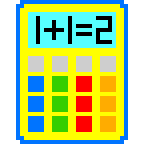

Calculatorfor Friday the 6th of Feb
NO LOG ENTRY DATA WITHIN LAST 12 HOURS AVAILABLE TO CALCULATE
| time | BGL (mmol/L) | food | serve | bolus rapid | bolus medium | exercise |
|---|
| time | bgl | food | serve | bolus rapid | bolus medium | exercise |
|---|---|---|---|---|---|---|
| bgl FX during timezone | ||||||
|---|---|---|---|---|---|---|
| time | BGL (mmol/L) | food glucose | up + | bolus units | down - | exercise factor |